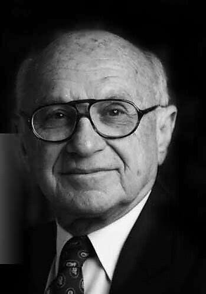

DEMAND FOR MONEY
Principles of Economics | Economics | AlmaU | School of Digital Technologies and Economics
Irving Fisher — Quantity Theory of Money Demand
Fisher links desired nominal money balances to the scale of nominal transactions.
MV = PY
Click to explain the equation
M — nominal money stock...
Classical transactions simulator
From exchange equation to money demand
MV=PY
M = PY/V
Ms = Md
Md = (1/V)PY = kPY
M = PY/V
Ms = Md
Md = (1/V)PY = kPY
k = 0.200 | Md = 2000
A higher P or Y raises nominal money demand...

John Maynard Keynes — Liquidity Preference Theory
Money demand reflects transactions, precaution and portfolio choice.
Md/P = f(i,Y)
Click for variables and intuition
Md/P — desired real money balances...
Interest rate → movement along Md
Money-market equilibrium and current central-bank reference rates
Equilibrium rate i*: 12.5%
Drag the red vertical Ms line...
William Baumol
James Tobin
William Baumol & James Tobin — Transactions Demand as Inventory Management
People trade off forgone interest against conversion costs.
M̄* = √(bT / 2i) | V = 2n
Click to explain
M̄* — optimal average money balance...
1. Saw-tooth & Velocity controls (T, n)
Withdrawal size C = T/n: 1000
Average balance M̄ = T/(2n): 500
Velocity V = T/M̄ = 2n: 24
Average balance M̄ = T/(2n): 500
Velocity V = T/M̄ = 2n: 24
Cash-balance saw-tooth (12 to 24 cycles)
Vertical jump = withdrawal C = T/n
Dashed green = average balance M̄
2. Interest & Cost controls (i, b)
Optimal average balance M̄*: 173.2
Optimal withdrawal C* = 2M̄*: 346.4
Optimal withdrawal C* = 2M̄*: 346.4
When interest rate i rises from 10% to 24%...
The cost trade-off and optimum C*
Total cost = Opportunity cost...

Milton Friedman — Modern Quantity Theory of Money
Money is one asset in a broader portfolio.
Md/P = f(Yp, rb−rm, re−rm, πe−rm)
Click for variables
Yp — permanent income...
💵 Moneyliquidity + rₘ
📜 Bondsrᵦ
📈 Equitiesrₑ
🏠 Real assetsgoods / property
🪙 Gold / FX / crypto*modern examples
* Gold and foreign currency...
Portfolio-return simulator
Normalized money-demand index
100
This is a teaching index...
Portfolio response: money demand and implied velocity
Illustrative model simulation — not an empirical time series.
As expected inflation or other alternative returns rise relative to the return on money, desired real balances fall and implied velocity rises.